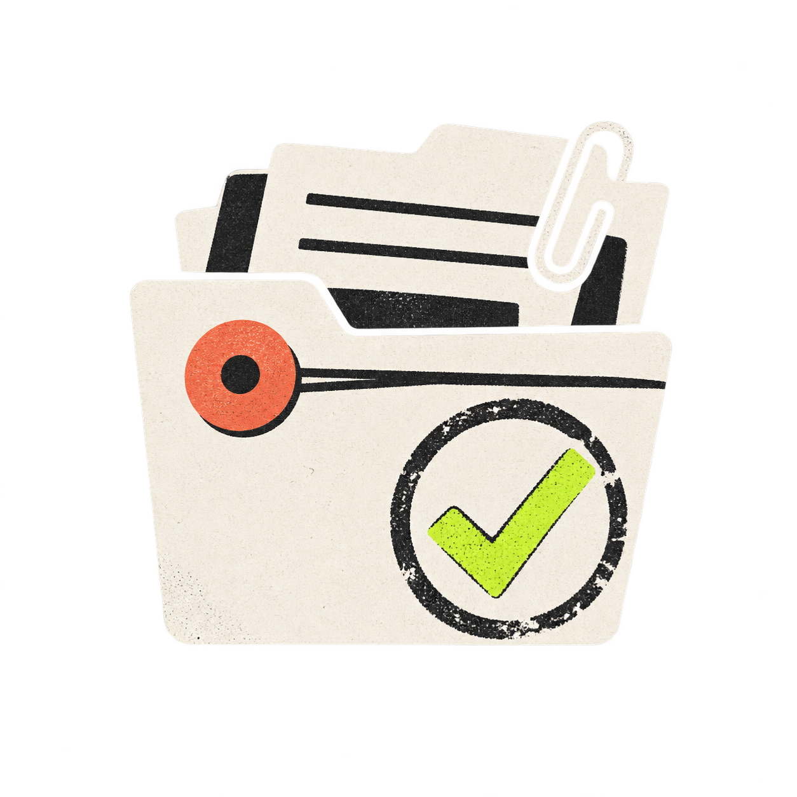

WORKPLACE SPECIMEN
档案局 / 01

你的工位，究竟是什么体质？
7 道题，看看你在职场里靠什么活下来。
不是职业测评。只是想知道，你每天到底是怎么活下来的。
OFFLINE / 7 QUESTIONS仅供娱乐
现场记录
01 / 07
单选 / SINGLE CHOICE
体质鉴定单 / 已归档
SPECIMEN / F-01
YOUR WORKPLACE TYPE
长按选中这句，发给同事
结果仅供娱乐，不代表真实职业能力或人格判断